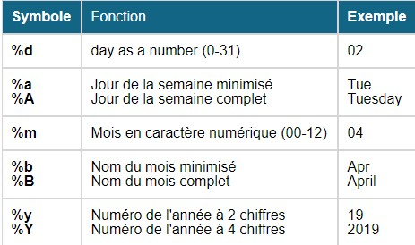

3 Premiers pas avec les données PMSI importées avec pmeasyr
3.1 Import des données MCO
La première étape de choisir un répertoire de travail et d’enregistrer vos fichiers de remontées dans ce répertoire. Nosu prendrons ici les recommandations de Guillaume : '~/Documents/data/mco .
Les noms des fichiers en sortie de GENRSA sont de la forme :
- finess.annee.mois.date_et_heure_de_creation.in.zip
- finess.annee.mois.date_et_heure_de_creation.out.zip
Ensuite on dézippe l’archive avec la fonction adzip :
pmeasyr::adezip(finess = 750712184,
annee = 2021,
mois = 8,
path = 'C:/Users/3056269/Documents/data/mco',
liste = c("rss"),
type = "in")Import des rsa :
pmeasyr::irum(finess = 750712184,
annee = 2021,
mois = 8,
path = 'C:/Users/3056269/Documents/data/mco',
typi = 4,
tolower_names = TRUE ) -> rum21L’import a créé plusiseurs dataframe qui sont rangé dans l’objet rsa21 qui est une liste :
typeof(rum21)
names(rum21)3.2 Premières analyses
Dans cette première partie nous allons tester différents calcul sur les RSA avec le formalisme de dplyr. Commençons par charger le package de façon à ne pas avoir à repéter le préfix dplyr:: :
library(dplyr)Sélectionner les rum dont le diagnostic est I10 :
rum21$rum %>% filter(dp == "I10")Sélectionner les rum dont le diagnostic est I10 et changer le format de la date pour avoir le mois de sortie.
rum21$rum %>% filter(dp == "I10") %>%
mutate(moissor = format(d8soue,"%m") )
On peut donc changer le format d’une date en R avec la fonction format. Ci dessus les principaux type de format utilisés.
Sélectionner les rum dont le diagnostic est I10 et compter le nombre de résumé par mois, fonction n() permet de compte le nombre de ligne dans le tableau de données, ici groupé par mois :
rum21$rum %>% filter(dp == "I10") %>%
mutate(moissor = format(d8soue,"%m") ) %>%
group_by(moissor) %>%
summarise(nb = n())Créer une table qui permette d’avoir la date d’entrée et de sortie du séjour :
dates_sejours <- rum21$rum %>%
group_by(nas) %>%
summarise(dtentr = min(d8eeue),
dtsor = max(d8soue)) %>%
ungroup()
dates_sejoursRéaliser la jointure entre les RUM et les dates d’entrée/sortie du séjours pour faire un calcul du nombre de RUM par mois de sortie du séjour :
rum21$rum %>% dplyr::filter(dp == "I10") %>%
left_join(.,dates_sejours) %>%
mutate(moissor = format(dtsor,"%m") ) %>%
group_by(moissor) %>%
summarise(nb = n())Par défaut, la jointure est réalisée sur les colonnes qui sont présentes dans les 2 dataframes :
Ne compter que les séjours et non les RUM :
rum21$rum %>% dplyr::filter(dp == "I10") %>%
left_join(.,dates_sejours) %>%
mutate(moissor = format(dtsor,"%m") ) %>%
group_by(moissor) %>%
summarise(nb = length(unique(nas)))Rechercher le diagnostic dans l’ensemble des diagnostics : 1) Rechercher le diagnostic dans les diagnostics associés
rum21$das %>% dplyr::filter(das == "I10") -> das_i10- utiliser ce résultat pour compléter la recherche
rum21$rum %>% dplyr::filter(dp == "I10" | nas %in% das_i10$nas ) %>%
left_join(.,dates_sejours) %>%
mutate(moissor = format(dtsor,"%m") ) %>%
group_by(moissor) %>%
summarise(nb = length(unique(nas)))Faire la même recherche pour les patients qui résident à Paris :
rum21$rum %>% dplyr::filter(dp == "I10" | nas %in% das_i10$nas,
substr(cdresi,1,2) == "75" ) %>%
left_join(.,dates_sejours) %>%
mutate(moissor = format(dtsor,"%m") ) %>%
group_by(moissor) %>%
summarise(nb = length(unique(nas)))